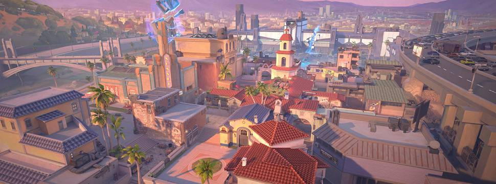
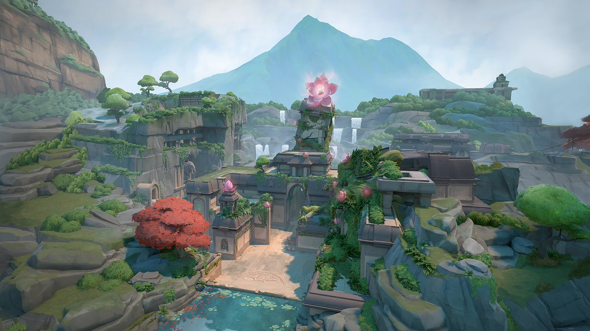
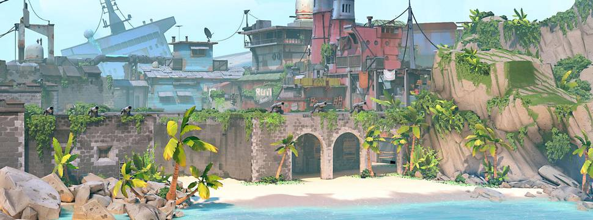
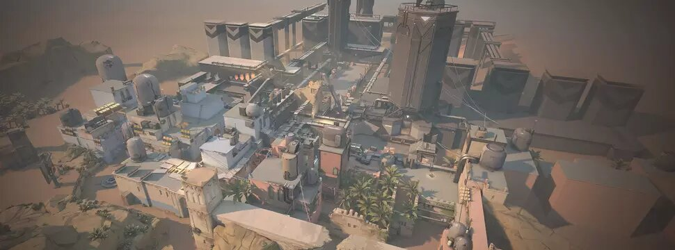
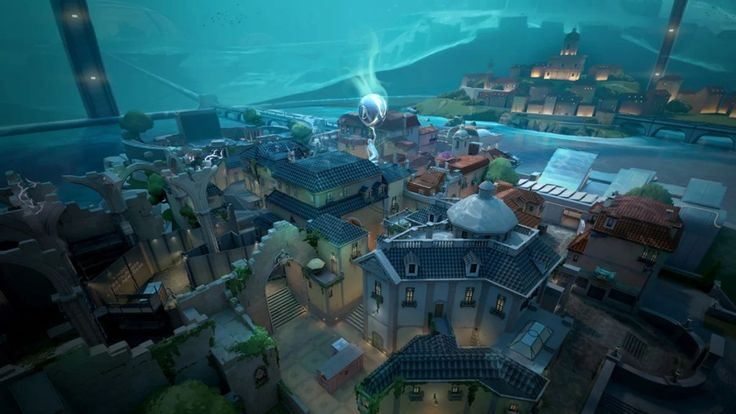
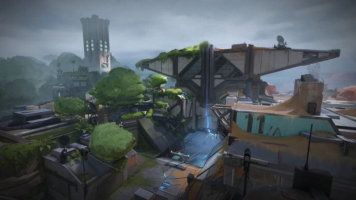
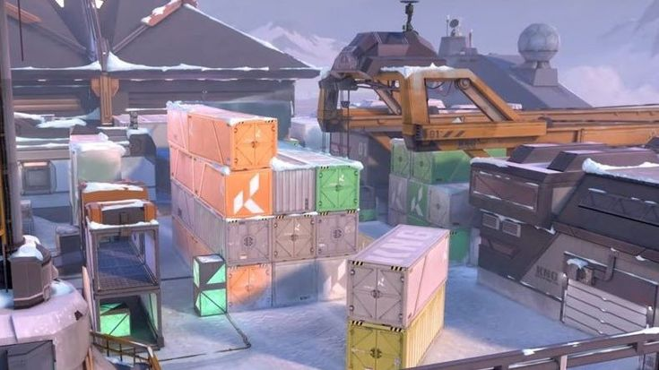
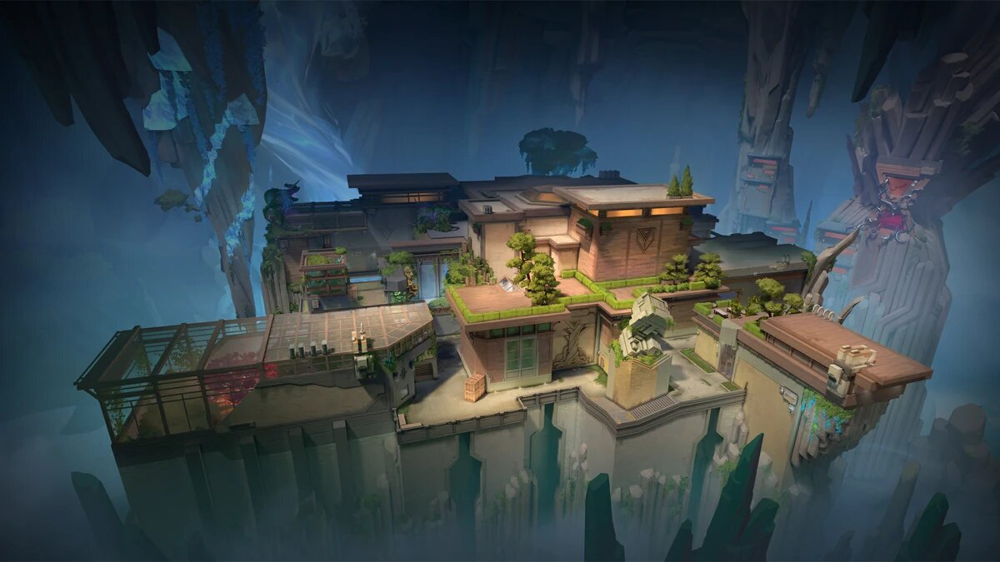

Mapas
SUNSET

Un desastre sucedido en una instalación local de Kingdom amenaza con tragarse el vecindario entero. Haz una paradita en tu puesto de comida de confianza y después recorre la ciudad para luchar en este tradicional mapa de tres calles.
LOTUS

Una enigmática estructura que alberga un conducto astral del que emana un antiguo poder. Las imponentes y pétreas puertas proporcionan oportunidades de movimiento y desbloquean los caminos hacia tres zonas misteriosas.
BREEZE

Disfrutad de las vistas de ruinas históricas y cuevas junto al mar en este paraíso tropical, pero no olvidéis traer protección... La necesitaréis en los amplios espacios abiertos y enfrentamientos a largo alcance. Vigilad vuestros flancos: llega Breeze.
BIND

Dos ubicaciones sin zona central. Derecha o izquierda, ¿por cuál os decantaréis? Ambas disponen de caminos directos para los atacantes y dos teleportadores unidireccionales que facilitan los flanqueos.
HAVEN

Bajo un monasterio olvidado, retumba el clamor de agentes rivales que luchan por controlar tres ubicaciones distintas. Hay más territorio que en otros mapas, pero los defensores pueden aprovecharlo para avanzar de forma agresiva y flanquear.
PEARL

Los atacantes presionan a los defensores en este mapa de dos zonas situado en una vibrante ciudad submarina. Pearl es un mapa sin mecánicas donde lo importante es la geometría. Enfrentaos en una zona central estrecha o en las alas laterales más largas en nuestro primer mapa situado en Tierra Omega.
FRACTURE

Una instalación de investigación de alto secreto que quedó dividida tras un experimento fallido relacionado con la radianita. Al igual que el mapa, las opciones de los defensores son muy variadas, así que la decisión queda en tus manos: ve a buscar a los atacantes a su territorio o atrinchérate y aguanta el asalto.
ASCENT

Un patio abierto para pequeños combates de posicionamiento y desgaste divide las dos ubicaciones de Ascent. Cada una de ellas puede fortificarse con unas puertas a prueba de bombas. Tendréis que destruirlas o buscar otro camino. La cuestión es no ceder ni un centímetro.
ICEBOX

Vuestro próximo campo de batalla será una zona de excavación de Kingdom secreta y abandonada en territorio ártico. Las dos zonas para plantar la Spike están protegidas por capas de nieve y metal, y cubrir las distancias horizontales requerirá destreza. Recurrid a las tirolinas y pillad al enemigo por sorpresa.
SPLIT

Para llegar lejos, hay que ascender. Dos ubicaciones separadas por un centro elevado que dispone de dos zonas de cuerdas para facilitar el movimiento. Cada una de las ubicaciones cuenta con una gran torre esencial para hacerse con el control. No perdáis de vista estas zonas antes de que salten por los aires.
ABBYS

El primer mapa de VALORANT que no tiene límites exteriores y una caída mortal en el medio, lo que hace posible que en estas áreas los jugadores se caigan del mapa y mueran.